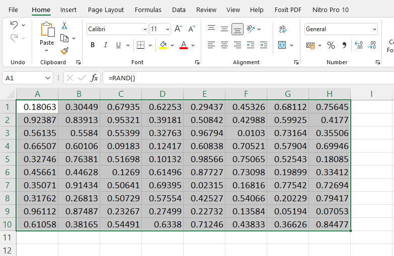

runif(100) |> head(5)[1] 0.2184144 0.8460639 0.1407605 0.1561879 0.1174364Survei adalah menduga parameter populasi berdasarsarkan informasi sampel. Faktor apa saja yang memengaruhi jumlah informasi di sampel?
Dua poin penting:
Do these methods produce a simple random sample of students from a class of 30 students?
Kunci dari jawaban tersebut adalah:
Nielsen Ratings - ambil 5000 rumah tangga di AS; tidak boleh ada relawan. Dipasang meter elektronik yang mengetahui acara yang sedang ditonton.
Cara salah:
Peneliti bisa saja berbias dan walaupun representatif, tingkat kesalahan tak dapat diketahui karena tidak diketahui struktur probabilitasnya.
Cara benar:
Valedictorian: lulusan terbaik.
Jawaban dari exercise tersebut adalah:
Walaupun representatif, tingkat kesalahan tak dapat diperkirakan.
Untuk melakukan pengacakan, sering dipakai random number generator:
Gunakan fungsi =RAND(): 
Gunakan fungsi runif():
runif(100) |> head(5)[1] 0.2184144 0.8460639 0.1407605 0.1561879 0.1174364Gunakan rng dari package numpy:
import numpy as np
rng = np.random.default_rng(3854)
rng.random(5)array([0.50955422, 0.53163209, 0.98811285, 0.47079458, 0.08600762])Algoritma:
Sebelum melaksanakan algoritma tersebut, lihat dataset dan jumlah row:
Pertama, ambil data dari csv:
Pilih file, lalu preview dan load:
Data akan terlihat di Excel.
Langkah relatif sama. Baca CSV, lihat file.
penguins <- read.csv("penguins.csv")
penguins |> head(3) rowid species island bill_length_mm bill_depth_mm flipper_length_mm
1 1 Adelie Torgersen 39.1 18.7 181
2 2 Adelie Torgersen 39.5 17.4 186
3 3 Adelie Torgersen 40.3 18.0 195
body_mass_g sex year
1 3750 male 2007
2 3800 female 2007
3 3250 female 2007penguins |> nrow()[1] 344import pandas as pd
penguins = pd.read_csv("penguins.csv")
print(penguins.head()) rowid species island ... body_mass_g sex year
0 1 Adelie Torgersen ... 3750.0 male 2007
1 2 Adelie Torgersen ... 3800.0 female 2007
2 3 Adelie Torgersen ... 3250.0 female 2007
3 4 Adelie Torgersen ... NaN NaN 2007
4 5 Adelie Torgersen ... 3450.0 female 2007
[5 rows x 9 columns]print(len(penguins.index))344Lalu, buat angka acak. Angka acak ini merupakan kolom baru di dataset. Tiap elemen mendapat angka acak yang unik. Bagaimana kita tahu jumlah angka acak yang perlu dibuat? Cari terlebih dahulu jumlah elemen di dataset.
Buat angka acak dengan rand().
Namun, angka acak ini akan selalu berubah jika di-sort. Oleh karena itu, copy, (CTRL+C) lalu paste as value. Opsi paste as value ditemukan dengan meng-klik kanan:
Lalu ditemukan opsi tersebut; opsi berupa suatu clipboard (kertas di atas papan jalan) dengan angka 123:
Jumlah angka acak dicari menggunakan nrow dari dataset. Mutate menghasilkan peubah baru.
library(dplyr)
Attaching package: 'dplyr'The following objects are masked from 'package:stats':
filter, lagThe following objects are masked from 'package:base':
intersect, setdiff, setequal, unionpenguins <- read.csv("penguins.csv")
penguins <- penguins |> mutate(rando = runif(nrow(penguins)))
penguins |> head(3) |> knitr::kable()| rowid | species | island | bill_length_mm | bill_depth_mm | flipper_length_mm | body_mass_g | sex | year | rando |
|---|---|---|---|---|---|---|---|---|---|
| 1 | Adelie | Torgersen | 39.1 | 18.7 | 181 | 3750 | male | 2007 | 0.0446831 |
| 2 | Adelie | Torgersen | 39.5 | 17.4 | 186 | 3800 | female | 2007 | 0.9646485 |
| 3 | Adelie | Torgersen | 40.3 | 18.0 | 195 | 3250 | female | 2007 | 0.0124733 |
Algoritma sama. namaDataset.insert digunakan untuk memasukkan angka acak.
import pandas as pd
import numpy as np
penguins = pd.read_csv("penguins.csv") #load csv
#generate random number
rng = np.random.default_rng(3854)
rando = rng.random(len(penguins.index))
penguins.insert(loc = 0, column = 'randomNumber', value = rando) #insert random number
penguins.head() #show randomNumber rowid species ... body_mass_g sex year
0 0.509554 1 Adelie ... 3750.0 male 2007
1 0.531632 2 Adelie ... 3800.0 female 2007
2 0.988113 3 Adelie ... 3250.0 female 2007
3 0.470795 4 Adelie ... NaN NaN 2007
4 0.086008 5 Adelie ... 3450.0 female 2007
[5 rows x 10 columns]Lalu, sortir data-nya dan ambil n data teratas:
Jika sudah berbentuk tabel, klik kolom nilai acak lalu sort sesuai keinginan:
Jika belum berbentuk tabel, pilih sampling frame yang ingin disortir, lalu klik sort & filter.
Lalu, pilih kolom nilai acak dan sortir.
Sortir menggunakan arrange.
penguins |> arrange(desc(rando)) |>
head(3) |> knitr::kable()| rowid | species | island | bill_length_mm | bill_depth_mm | flipper_length_mm | body_mass_g | sex | year | rando |
|---|---|---|---|---|---|---|---|---|---|
| 38 | Adelie | Dream | 42.2 | 18.5 | 180 | 3550 | female | 2007 | 0.9973631 |
| 333 | Chinstrap | Dream | 45.2 | 16.6 | 191 | 3250 | female | 2009 | 0.9947197 |
| 335 | Chinstrap | Dream | 50.2 | 18.8 | 202 | 3800 | male | 2009 | 0.9918906 |
Gunakan namaDataset.sort_values(by = "kolom angka acak", ...)
import pandas as pd
penguins_sorted = penguins.sort_values(by = "randomNumber", ascending=False)
print(penguins_sorted.head(58)) randomNumber rowid species ... body_mass_g sex year
82 0.998006 83 Adelie ... 3800.0 female 2008
2 0.988113 3 Adelie ... 3250.0 female 2007
179 0.985227 180 Gentoo ... 5650.0 male 2007
64 0.982089 65 Adelie ... 2850.0 female 2008
20 0.981606 21 Adelie ... 3400.0 female 2007
316 0.979618 317 Chinstrap ... 3950.0 male 2008
36 0.978045 37 Adelie ... 3950.0 male 2007
226 0.971176 227 Gentoo ... 4700.0 female 2008
88 0.968786 89 Adelie ... 3950.0 male 2008
291 0.967539 292 Chinstrap ... 4050.0 male 2007
142 0.964342 143 Adelie ... 3050.0 female 2009
66 0.964280 67 Adelie ... 3350.0 female 2008
192 0.964219 193 Gentoo ... 3950.0 female 2008
245 0.962202 246 Gentoo ... 5650.0 male 2009
337 0.957290 338 Chinstrap ... 3650.0 female 2009
261 0.955021 262 Gentoo ... 5500.0 male 2009
215 0.951514 216 Gentoo ... 5650.0 male 2008
91 0.949608 92 Adelie ... 4300.0 male 2008
73 0.949112 74 Adelie ... 4150.0 male 2008
223 0.938686 224 Gentoo ... 5000.0 male 2008
289 0.929323 290 Chinstrap ... 4050.0 male 2007
242 0.923924 243 Gentoo ... 4950.0 female 2009
317 0.914438 318 Chinstrap ... 3650.0 female 2008
19 0.908108 20 Adelie ... 4200.0 male 2007
197 0.906972 198 Gentoo ... 4900.0 female 2008
177 0.905509 178 Gentoo ... 5100.0 male 2007
229 0.901730 230 Gentoo ... 6000.0 male 2008
54 0.900127 55 Adelie ... 2900.0 female 2008
156 0.898963 157 Gentoo ... 5400.0 male 2007
225 0.891437 226 Gentoo ... 5200.0 female 2008
239 0.887460 240 Gentoo ... 5300.0 male 2009
273 0.884751 274 Gentoo ... 5750.0 male 2009
324 0.883531 325 Chinstrap ... 3250.0 male 2009
23 0.881101 24 Adelie ... 3950.0 male 2007
27 0.880034 28 Adelie ... 3200.0 female 2007
175 0.876310 176 Gentoo ... 5050.0 male 2007
134 0.876252 135 Adelie ... 3425.0 female 2009
310 0.869858 311 Chinstrap ... 3600.0 male 2008
272 0.866883 273 Gentoo ... 4850.0 female 2009
106 0.861813 107 Adelie ... 3750.0 female 2009
11 0.860677 12 Adelie ... 3700.0 NaN 2007
280 0.857667 281 Chinstrap ... 3725.0 male 2007
320 0.857076 321 Chinstrap ... 3675.0 female 2009
70 0.855720 71 Adelie ... 3600.0 female 2008
297 0.853891 298 Chinstrap ... 3400.0 male 2007
189 0.849117 190 Gentoo ... 5250.0 male 2008
110 0.832433 111 Adelie ... 3825.0 female 2009
100 0.829604 101 Adelie ... 3725.0 female 2009
178 0.828691 179 Gentoo ... 4100.0 NaN 2007
234 0.828592 235 Gentoo ... 4725.0 female 2009
194 0.824546 195 Gentoo ... 4300.0 female 2008
195 0.821451 196 Gentoo ... 4750.0 male 2008
202 0.819321 203 Gentoo ... 4850.0 female 2008
247 0.818314 248 Gentoo ... 5200.0 male 2009
307 0.817592 308 Chinstrap ... 4300.0 male 2008
224 0.814083 225 Gentoo ... 5100.0 male 2008
308 0.813684 309 Chinstrap ... 3350.0 female 2008
257 0.807059 258 Gentoo ... 5500.0 male 2009
[58 rows x 10 columns]library(dplyr)
indexes <- sample.int(n = nrow(penguins), size = 3)
penguins |> filter(rowid %in% indexes) |> knitr::kable()| rowid | species | island | bill_length_mm | bill_depth_mm | flipper_length_mm | body_mass_g | sex | year | rando |
|---|---|---|---|---|---|---|---|---|---|
| 157 | Gentoo | Biscoe | 47.6 | 14.5 | 215 | 5400 | male | 2007 | 0.0078695 |
| 177 | Gentoo | Biscoe | 42.9 | 13.1 | 215 | 5000 | female | 2007 | 0.0161075 |
| 227 | Gentoo | Biscoe | 46.4 | 15.0 | 216 | 4700 | female | 2008 | 0.0145003 |
import pandas as pd
import numpy as np
indexes = np.random.randint(0, len(penguins.index),5)
newpenguins = penguins[(penguins.index).isin(indexes)]
newpenguins randomNumber rowid species ... body_mass_g sex year
8 0.741840 9 Adelie ... 3475.0 NaN 2007
46 0.557284 47 Adelie ... 3425.0 male 2007
93 0.647475 94 Adelie ... 4450.0 male 2008
138 0.391819 139 Adelie ... 3400.0 female 2009
326 0.482629 327 Chinstrap ... 3325.0 female 2009
[5 rows x 10 columns]Bagi jadi 3 - ambil sampel sebanyak:
Beberapa rumus yang digunakan untuk menduga parameter populasi:
\[ \begin{aligned} \hat{\mu}&=\bar{y}=\frac{\sum_{i=1}^n y_i}{n} & \text{(mean)}\\ \hat{V}(\bar{y})&=\left(1-\frac{n}{N}\right)\frac{s^2}{n}&\text{(ragam penduga)}\\\ s^2&=\frac{1}{n-1}\sum_{i=1}^n(y_i-\bar{y})^2 &\\ \hat{\mu}&\pm2\sqrt{\hat{V}(\bar{y})} & \text{(selang kepercayaan)} \end{aligned} \]
Penduga bagi mean adalah rataan sampel, yaitu total nilai dari sampel dibagi ukuran sampel. Bagaimana untuk ragam penduga? Penurunan rumus ini dimulai dari nilai \(V\left(\bar{y}\right)\). Dalam kasus populasi tak hingga yang saling bebas dan memiliki ragam sama:
\[ \begin{aligned} V\left(\bar{y}\right)&=V\left(\frac{y_1+\ldots+y_n}{n}\right)=\frac{1}{n^2}V(y_1+\ldots+y_n)\\ &=\frac{V(y_1)+\ldots+V(y_n)}{n^2}=\frac{n\sigma}{n^2}=\frac{\sigma}{n} \end{aligned} \]
Jadi, misal ada 100 elemen yang diobservasi di sampel, ragam dari rata-ratanya seharusnya menjadi \(\sigma/n\). Namun jika sampel terhingga, misal 100, maka ragamnya bukan \(\sigma/n\). Harusnya nol karena kita mengobservasi seluruh populasi!
Dengan logika yang sama, dalam kasus populasi terhingga, ukuran sampel dianggap besar atau kecil relatif terhadap ukuran populasi. Jika sebagian besar populasi sudah diambil di sampel walaupun \(n\) atau ukuran absolutnya kecil, seharusnya ragam dari rata-rata berkurang signifikan. Oleh karena itu, perlu ada faktor koreksi populasi terhingga. Dengan faktor koreksi tersebut, ditemukan bahwa
\[ \mathrm{Var}(\bar{y}) = \frac{\sigma^2}{n} \left( \frac{N-n}{N-1} \right) \]
Untuk lengkapnya, baca di sini.
Lalu ternyata \(E(s^2)=\frac{N}{N-1}\sigma^2\). Derivasi ada di halaman akhir buku Schaeffer. Oleh karena itu, agar pendugaan tak bias, perlu dikalikan dengan \(\frac{N-n}{N}=\left(1-\frac{n}{N})\right\).
Selang kepercayaan \(95\%\) selalu akan memiliki bentuk $& $. Agar kepercayaan \(95\%\), maka probabilitas di sisi kiri dan kanan masing masing \(2.5\%\). \(Z_{0.025}=1.96\).
\[ \begin{aligned} \hat{\tau}&=N\bar{y}=\frac{N\sum_{i=1}^n y_i}{n} & \text{(total)}\\ \hat{V}(\hat{\tau})&=\hat{V}(N\bar{y})=N^2\left(1-\frac{n}{N}\right)\frac{s^2}{n}&\text{(ragam penduga)}\\\ \hat{\tau}&\pm2\sqrt{\hat{V}(\hat{\tau})} & \text{(selang kepercayaan)} \end{aligned} \]
Logika dari penduga ini adalah perkalian penduga-penduga mean sebelumnya dengan ukuran populasi \(N\). Karena ragam merupakan semua bentuk kuadrat, maka ukuran populasi dikuadratkan (\(N^2\)).
\[ \begin{aligned} \hat{p}&=\bar{y}=\frac{\sum_{i=1}^n y_i}{n} & \text{(proporsi, y=1 atau 0)}\\ \hat{V}(\hat{p})&=\left(1-\frac{n}{N}\right)\frac{\hat{p}\hat{q}}{n-1}&\text{(ragam penduga)}\\ \hat{q}&=1-\hat{p}\\ \hat{p}&\pm2\sqrt{\hat{V}(p)} & \text{(selang kepercayaan)} \end{aligned} \]
Penduga ragam proporsi tersebut berasal dari sebaran Bernoulli. Peluang satu observasi \(Y\) memiliki nilai 1 (sukses) atau 0 (gagal) dimodelkan dengan:
\[ f(y)=p^{y}(1-p)^{1-y} \]
Nilai harapannya adalah:
\[ 0\cdot f(0)+1\cdot f(1)=p \]
Dan ragamnya adalah:
\[ \begin{aligned} (0-p)^2 f(o)+(1-p)^2f(1)&=p^2(1-p)+p(1-p)^2\\ &=p(p-p^2+1-2p+p^2)=p(1-p)\\ &=pq \end{aligned} \]
Yang menggantikan \(\sigma\) untuk satu observasi. Selebihnya, filosofi penurunannya sama.
Asumsikan Anda ingin menghitung rata-rata bill length dari 50 penguin di sebuah sampel dataset penguins. Asumsikan bahwa data tersebut dikumpulkan melalui simple ranom sampling, dari populasi 344 penguin di dataset.
Sebelum menghitung rata-rata, perhatikan bahwa angka-angka di dataset rata kiri. Ternyata, angka tersebut belum dianggap data numerik oleh Excel. Oleh karena itu, buat kolom baru untuk konversi menggunakan fungsi VALUE. Untuk baris pertama, misal, nilai bill length berada di D2. Oleh karena itu, nilai kolom baru tersebut adalah VALUE(D2).
Langkah pertama adalah menghitung rata-rata. Bill length yang berbentuk angka berada di kolom E, 2-51. Maka tuliskan SUM(E2:E51)/50 atau AVERAGE(E2:E51)
Dapat dilakukan dua cara untuk menghitung simpangan baku sampel. Pertama, dapat dibuat kolom simpangan \(y-\bar{y}\), lalu dikuadratkan. Karena kita ingin mengurangi seluruh kolom E dengan konstanta di B53, maka gunakan $B$53 agar posisi sel yang mengandung rataan sampel tidak berubah. $B menetapkan indeks kolom (tidak berubah jika di-copy ke kanan-kiri) dan $53 menetapkan indeks baris (tidak berubah jika di-copy ke atas-bawah). Kolom E tidak perlu diberi tanda $. Justru, jika diberi tanda dolar di E$1, misal, indeks baris (angka) akan tetap di E1 walaupun rumus di-copy ke baris di bawahnya.
Untuk mengkuadratkan, gunakan [tempat sel]^2. Misal ingin mengkuadratkan sel E1, maka tulis E1^2. Gunakan SUM untuk mencari jumlah, dan bagi \(n-1\). Atau, dapat digunakan VAR.S(RANGE). Jadi, buat VAR.S(E2:E51).
Lalu, hitung faktor koreksi dan \(1/n\). Gunakan PRODUCT untuk menghitung perkalian:
BoE selalu memiliki bentuk \(2\sqrt{V(\hat{\mu})}\) untuk mean:
Karena diketahui bahwa:
\[ \hat{\tau}=N\bar{y};\quad \mathrm{V(\hat{\tau})}= \mathrm{V(N\bar{y})=N^2V(\bar{y})} \]
Maka perhitungan cukup sederhana.
Misal ingin dihitung proporsi penguin laki-laki. Cara sederhana adalah mengkonversi data kategorik jenis kelamin menjadi data biner 0/1 menggunakan fungsi IF. Misal jika baris pertama (K2) laki-laki, buat menjadi 1. Jika tidak, buat menjadi 0. Jadi: IF(K2="male"; 1; 0). Lalu tambahkan dan bagi 50 untuk mendapat proporsi.
Sehingga hasilnya:
Rumus-rumus matematika dapat ditulis dengan lebih mudah menggunakan LaTeX. LaTeX dapat digunakan di Microsoft Word di menu Equation. Menu tersebut diakses menggunakan Alt + Tab.
Atau, dapat diakses menggunakan Overleaf.
Angka dituliskan di LaTeX seperti biasa. Simbol-simbol ditulis menggunakan \namasimbol, misal \theta untuk \(\theta\). \mu dan \sigma menuliskan \(\mu\) dan \(\sigma\). \bar{y} menghasilkan \(\bar{y}\) dan \hat{\mu} menghasilkan \(\hat{\mu}\).
Subskrip dan superskrip ditulis menggunakan _ dan ^. Misal, y_{i3}^{e4} menghasilkan \(y_{i3}^{e4}\). Pertambahan ditulis menggunakan \sum.
Pecahan ditulis menggunakan \frac{}{}. Misal \frac{1}{2} menghasilkan \(\frac{1}{2}\). Pertambahan dituliskan menggunakan \sum dan perkalian dituliskan menggunakan \prod.
Ada beberapa environment di LaTeX. Environment yang cukup penting adalah aligned. Tiap baris dipisahkan menggunakan //. Kesejajaran tiap baris dipastikan dengan tanda &. Misal &= memastikan tanda sama dengan pertama di tiap baris sejajar.
Misal, kode LaTeX untuk menuliskan penduga mean:
\begin{aligned}
\hat{\mu}&=\bar{y}=\frac{\sum_{i=1}^n y_i}{n} & \text{(mean)}\\
\hat{V}(\bar{y})&=\left(1-\frac{n}{N}\right)\frac{s^2}{n}&\text{(ragam penduga)}\\\
s^2&=\frac{1}{n-1}\sum_{i=1}^n(y_i-\bar{y})^2 &\\
\hat{\mu}&\pm2\sqrt{\hat{V}(\bar{y})} & \text{(selang kepercayaan)}
\end{aligned}Hitung mean, total, dan proporsi 3 variabel di sampel yang kamu ambil. Bandingkan dengan nilai parameter populasi:
Penduga untuk ukuran sampel secara umum ditemukan dengan memodifikasi rumus BoE. Ingat bahwa BoE adalah \(2\sqrt{V(\bar{y})}\). Oleh karena itu, ukuran sampel yang mengontrol BoE menjadi jumlah tertentu ditemukan dengan memanipulasi rumus tersebut.
\[ \begin{aligned} n=\frac{N\sigma^2}{(N-1)D+\sigma^2}; \quad D=\frac{B^2}{4} \end{aligned} \]
Rumus itu tidak lain ditemukan dari:
\[ \begin{aligned} \mathrm{Var}(\bar{y})&= \frac{\sigma^2}{n} \left( \frac{N-n}{N-1} \right)\\ B&=2\sqrt{\mathrm{V}(\bar{y})}\\ \sqrt{D}&=\frac{B}{2}=\sqrt{\frac{\sigma^2}{n} \left( \frac{N-n}{N-1} \right)}\\ D&=\frac{\sigma^2}{n} \left( \frac{N-n}{N-1} \right)=\frac{1}{n}\left(\frac{\sigma^2N-\sigma^2n}{N-1}\right)\\ n&=\frac{\sigma^2N-\sigma^2n}{ND-D}\\ n+\frac{\sigma^2n}{ND-D}&=\frac{\sigma^2N}{ND-D}\\ n\left(1+\frac{\sigma^2}{ND-D}\right)&=\frac{\sigma^2N}{ND-D}\\ n&=\frac{\sigma^2N}{ND-D}\cdot\frac{ND-D}{ND-D+\sigma^2}=\frac{N\sigma^2}{(N-1)D+\sigma^2} \end{aligned} \]
Penurunan untuk kasus-kasus lain akan relatif sama dengan penurunan ini.
\[ \begin{aligned} n=\frac{N\sigma^2}{(N-1)D+\sigma^2}; \quad D=\frac{B^2}{4N^2} \end{aligned} \]
Rumus ini ditemukan dari fakta bahwa \(\tau=N\bar{y}\) sehingga:
\[ \begin{aligned} B&=2\sqrt{\mathrm{V}(N\bar{y})}=2\sqrt{N^2 V(\bar{y})}=2N\sqrt{V(\bar{y})}\\ \sqrt{D}&=\frac{B}{2N}=\sqrt{V(\bar{y})}\\ \end{aligned} \]
Yang diturunkan dengan cara sama seperti sebelumnya.
\[ \begin{aligned} n=\frac{Npq}{(N-1)D+pq}; \quad D=\frac{B^2}{4N}, \ q=1-p \end{aligned} \]
\(\sigma^2\) digantikan saja dengan \(pq\), dengan alasan yang dijelaskan di penduga ragam proporsi.
Keuntungan perhitungan ukuran sampel untuk proporsi adalah dapat dihitung jika \(p\) dan \(q\) tidak diketahui. Dapat diasumsikan \(p\) dan \(q\) yang memaksimumkan ragam, yaitu \(0.5\) (ambil turunan pertama dari \(p-p^2\)).
Untuk dua peubah acak \(y_1\) dan \(y_2\):
\[ E(y_1-y_2)=E(y_1)-E(y_2) \]
Dan:
\[ V(y_1-y_2)=V(y_1)+V(y_2)-2\mathrm{Cov}(y_1,y_2) \]
Jika \(y_1\) dan \(y_2\) saling bebas \(\mathrm{Cov}(y_1,y_2)=0\). Jika \(y_1, \ldots, y_n\) dan \(x_1, \ldots, x_m\) saling bebas dengan rata-rata \(\mu_x\) dan \(\mu_y\). Maka jika diduga menggunakan \(\bar{y}-\bar{x}\).
\[ E(\bar{y}-\bar{x})=E(\bar{y})-E(\bar{x})=\mu_y-\mu_x \]
Dan:
\[ V(\bar{y}-\bar{x})=V(\bar{y})+V(\bar{x}) \]
Yang ditemukan melalui rumus sebelumnya.